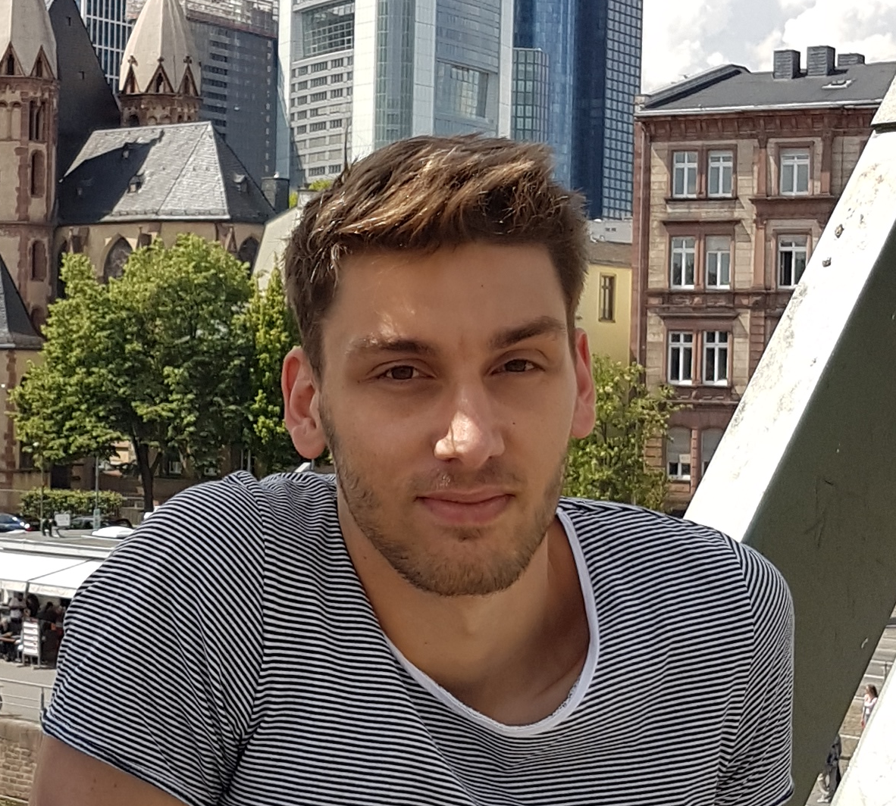

I am a Ph.D. student at the Technical University of Berlin, working as a researcher and teaching assistant in the Discrete Mathematics/Geometry group under the supervision of Michael Joswig. I enjoy working on problems involving hard computational challenges and the generation of large sets of experimental data. My main contributions so far lie at the intersection of quantum information theory and combinatorics. These contributions have been made in the development of the notions of quantum isomorphism and quantum symmetries for matroids. Throughout this time, I have been working as a developer of non-commutative algebra within the computer algebra system OSCAR.
Since 2022 I am part of the development team of Polymake, a software for research in polyhedral geometry, combinatorics, and related areas.
As a member of the team, I am involved in the ongoing process of refactoring the code base from C++11 to C++17.
Some of my standalone project are listed below.
As part of my teaching duties, I have been involved in the following courses at TU Berlin: